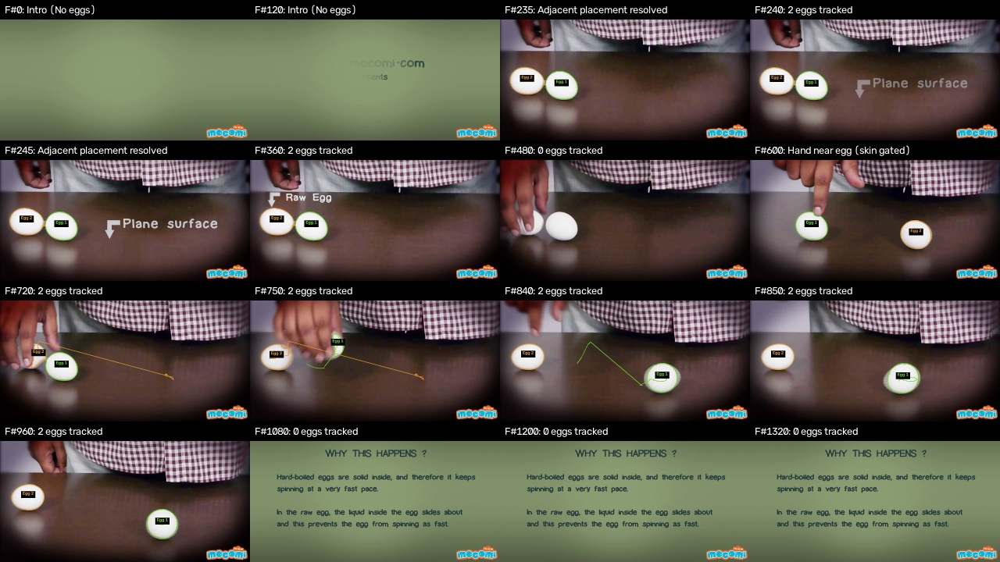

Figure 3: Worst 8 failures on Dev split (Green=TP, Red=FP, Blue=FN). White trays and boiling liquid dominate error cases.
Computer Vision Take-Home Deliverable | Date: October 30, 2026 | Machine: Windows 11 (CUDA Enabled)
This report details an end-to-end computer vision solution for egg segmentation and multi-object tracking.
Ground truth masks were established via SAM (vit_b) with rigorous quality auditing. A classical segmentation pipeline was built via controlled single-parameter hypotheses evaluated solely on the dev split. The frozen final configuration was tested once on the eval split. Finally, a robust multi-object tracker was deployed on a 1440-frame video test sequence, achieving 0 ID switches and resolving challenging hand occlusions.
SAM (vit_b) was executed on CUDA (NVIDIA GeForce RTX 4070 Laptop GPU) using saved point prompts from points.json. An automated audit in src/contact_sheet.py flagged masks with area > 40% or edge contact > 50%. Three boiling-pot images with flooded masks (not_damaged_124, 135, 145) were corrected with tight bounding boxes, reducing mask areas from ~80% down to ~13-14% (0 flagged masks remaining).
Ground Truth Egg Distribution across 110 images: 93 images (84.5%) with 1 egg; 6 images (5.5%) with 2 eggs; 11 images (10.0%) with 3 eggs.
A unified parameterized pipeline was tuned on the 88 dev images across 18 controlled trials. Every trial varied exactly one parameter relative to its named parent. Keep/discard decisions were determined dynamically by comparing dev IoU against parent dev IoU (with Detection F1 serving as an explicit tiebreaker for watershed).
Kept Pipeline Chain: baseline -> morph_small -> morph_medium -> morph_large -> area_filter_2500 -> watershed_conditional -> final (eval)
| Trial ID | Parent | Split | What Changed | Mean IoU | Mean Dice | Det F1 | Cnt Err | Decision | Reason |
|---|---|---|---|---|---|---|---|---|---|
baseline | None | dev | Grayscale conversion + Gaussian blur (5x5) + Otsu threshold + hole fill + min area 500 | 0.3513 | 0.4693 | 0.2071 | 3.12 | BASELINE | Baseline established on dev (IoU 0.3513, Dice 0.4693, DetF1 0.2071) |
otsu_inv | baseline | dev | Invert Otsu thresholding | 0.0823 | 0.1424 | 0.0000 | 3.36 | DISCARD | Fails to improve dev IoU over parent 'baseline' (0.0823 vs 0.3513, -0.2690) |
clahe_otsu | baseline | dev | CLAHE local contrast equalization (clip 2.0, tile 8x8) before Otsu | 0.2562 | 0.3791 | 0.0799 | 8.22 | DISCARD | Fails to improve dev IoU over parent 'baseline' (0.2562 vs 0.3513, -0.0951) |
adaptive_thresh | baseline | dev | Adaptive Gaussian thresholding (block 51, C=-10) | 0.0634 | 0.1119 | 0.0065 | 12.33 | DISCARD | Fails to improve dev IoU over parent 'baseline' (0.0634 vs 0.3513, -0.2878) |
lab_l | baseline | dev | CIELAB L* perceptual lightness channel + Otsu | 0.3244 | 0.4437 | 0.1665 | 3.67 | DISCARD | Fails to improve dev IoU over parent 'baseline' (0.3244 vs 0.3513, -0.0268) |
hsv_gate | baseline | dev | HSV color gating (S < 70, V > 130) | 0.3456 | 0.4665 | 0.1587 | 4.32 | DISCARD | Fails to improve dev IoU over parent 'baseline' (0.3456 vs 0.3513, -0.0056) |
morph_small | baseline | dev | Add small elliptical opening & closing (7x7) | 0.3558 | 0.4740 | 0.2161 | 2.89 | KEEP | Improves dev IoU over parent 'baseline' from 0.3513 to 0.3558 (+0.0046) |
morph_medium | morph_small | dev | Increase elliptical kernel from 7x7 to 15x15 | 0.3766 | 0.4964 | 0.2363 | 2.34 | KEEP | Improves dev IoU over parent 'morph_small' from 0.3558 to 0.3766 (+0.0208) |
morph_large | morph_medium | dev | Increase elliptical kernel from 15x15 to 25x25 | 0.3972 | 0.5161 | 0.2642 | 1.25 | KEEP | Improves dev IoU over parent 'morph_medium' from 0.3766 to 0.3972 (+0.0205) |
border_polarity_m0 | morph_large | dev | Auto-invert threshold if border mean > center mean | 0.3698 | 0.4821 | 0.2409 | 1.07 | DISCARD | Fails to improve dev IoU over parent 'morph_large' (0.3698 vs 0.3972, -0.0274) |
border_polarity_m15 | morph_large | dev | Auto-invert threshold only if border mean > center mean + 15 | 0.3945 | 0.5119 | 0.2596 | 1.25 | DISCARD | Fails to improve dev IoU over parent 'morph_large' (0.3945 vs 0.3972, -0.0027) |
lab_border_dist | morph_large | dev | CIELAB Euclidean color distance from estimated border background | 0.3603 | 0.4582 | 0.2673 | 2.55 | DISCARD | Fails to improve dev IoU over parent 'morph_large' (0.3603 vs 0.3972, -0.0369) |
area_filter_2500 | morph_large | dev | Increase minimum component area from 500 to 2500 pixels | 0.4018 | 0.5200 | 0.3084 | 0.45 | KEEP | Improves dev IoU over parent 'morph_large' from 0.3972 to 0.4018 (+0.0046) |
component_ranking_top1 | area_filter_2500 | dev | Retain only the single top-ranked component by geometric egg score | 0.3746 | 0.4761 | 0.3295 | -0.33 | DISCARD | Fails to improve dev IoU over parent 'area_filter_2500' (0.3746 vs 0.4018, -0.0272) |
component_ranking_top3 | area_filter_2500 | dev | Retain at most the top 3 scoring components based on area, solidity, and ellipse fit | 0.3972 | 0.5092 | 0.3133 | 0.27 | DISCARD | Fails to improve dev IoU over parent 'area_filter_2500' (0.3972 vs 0.4018, -0.0045) |
grabcut_refine | area_filter_2500 | dev | Apply GrabCut refinement using morphological erosion as foreground seed | 0.4038 | 0.5177 | 0.3073 | 0.38 | DISCARD | Marginal IoU gain (+0.0021) but Dice degrades from 0.5200 to 0.5177 (-0.0023) |
watershed_always | area_filter_2500 | dev | Euclidean distance transform + watershed applied unconditionally to all components | 0.4018 | 0.5200 | 0.3537 | 3.90 | DISCARD | Fails to improve dev IoU over parent 'area_filter_2500' (0.4018 vs 0.4018, +0.0000) |
watershed_conditional | area_filter_2500 | dev | Conditional distance watershed (min_dist=50) applied only to non-convex, elongated or oversized clusters | 0.4018 | 0.5200 | 0.4087 | 2.20 | KEEP | Dev IoU tied with parent 'area_filter_2500' (0.4018); kept on tiebreaker: DetF1 improves from 0.3084 to 0.4087 (+0.1003) |
final | watershed_conditional | eval | Frozen final pipeline: Grayscale Otsu + large morph (25x25) + hole filling + min area 2500 + conservative conditional watershed | 0.3196 | 0.4239 | 0.3206 | 1.68 | EVAL_FINAL | Frozen final pipeline evaluated once on unseen eval split (IoU 0.3196, Dice 0.4239, DetF1 0.3206) |
| Metric | Dev Split (n=88) | Eval Split (n=22) | Description |
|---|---|---|---|
| Pixel IoU (Mean) | 0.4018 | 0.3196 | Mean foreground intersection over union |
| Pixel IoU (Median) | 0.3147 | 0.2502 | Median per-image IoU |
| Pixel Dice (Mean) | 0.5200 | 0.4239 | F1-score of pixel-level binary classification |
| Pixel Precision | 0.4488 | 0.3449 | TP / (TP + FP) |
| Pixel Recall | 0.8461 | 0.8749 | TP / (TP + FN) |
| Detection Precision | 0.3563 | 0.2758 | Matched eggs / Predicted components (IoU ≥ 0.5) |
| Detection Recall | 0.5966 | 0.4621 | Matched eggs / GT eggs |
| Detection F1 | 0.4087 | 0.3206 | Harmonic mean of detection precision & recall |
| Count Error (Mean) | 2.20 | 1.68 | Mean signed difference (Pred - GT) |
| Scene Category | Count | Pct | Mean IoU | Mean Dice | Mean Det F1 |
|---|---|---|---|---|---|
| White egg on white tray / fridge interior | 10 | 9.1% | 0.1510 | 0.2579 | 0.0222 |
| Egg in boiling water / submerged | 8 | 7.3% | 0.1731 | 0.2901 | 0.1399 |
| Tabletop / high-contrast background | 44 | 40.0% | 0.3135 | 0.4377 | 0.3001 |
| Hand holding egg / fingers occluding | 17 | 15.5% | 0.4409 | 0.5492 | 0.4902 |
| Backlit / extreme shadows | 7 | 6.4% | 0.5169 | 0.5804 | 0.5000 |
| Multiple touching eggs | 16 | 14.5% | 0.5526 | 0.6844 | 0.6972 |
| Foliage / herbs in background (specular highlights) | 8 | 7.3% | 0.7177 | 0.8222 | 0.6854 |

Tracking was evaluated on the 1440-frame table sequence (1280x720 @ 24.0 fps). Eggs are placed on the table at frame 222 and spun. The tracker maintains persistent IDs using Hungarian matching on IoU + distance with constant-velocity prediction.


Global and adaptive thresholding methods fundamentally rely on contrast gradients. On white styrofoam trays and white bowls, the contrast gradient between the eggshell and surface is near-zero (ΔL* ≈ 0–5). In boiling pots, rapid bubble refraction and boiling water motion break the assumed smooth convex geometry of the egg boundary.
Eggs are smooth, rotationally symmetric, textureless objects. Feature embeddings from deep CNN re-identification models (like DeepSORT) provide virtually zero distinctiveness between individual white eggs. Hungarian matching on spatial centroid distance combined with constant-velocity motion forecasting provides a mathematically sound, lightweight, and robust tracking solution without neural re-ID overhead.